地政学
ウィントフックは南部アフリカの乾いた内陸首都です。南アフリカ支配からの独立、アンゴラ、ボツワナ、大西洋港との距離、鉱物資源の輸出が、政府機関と道路網を通じて街の重心を作っています。広い国土を結びます。
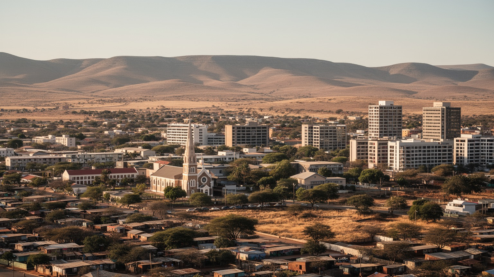
🇳🇦 ナミビア / 南部アフリカ / World City Atlas
乾いた高原の盆地に置かれたナミビアの首都です。政府機関、鉱業と金融、独立の記憶、植民地期の建築、タウンシップ、砂漠へ向かう旅行者の動線が一つの都市に重なります。
高原の首都
ウィントフックは港町ではなく、国土の中央高原で道路、行政、金融、教育、観光手配を束ねます。乾燥、距離、格差、独立後の国家建設が、街路の広がり方に強く表れます。
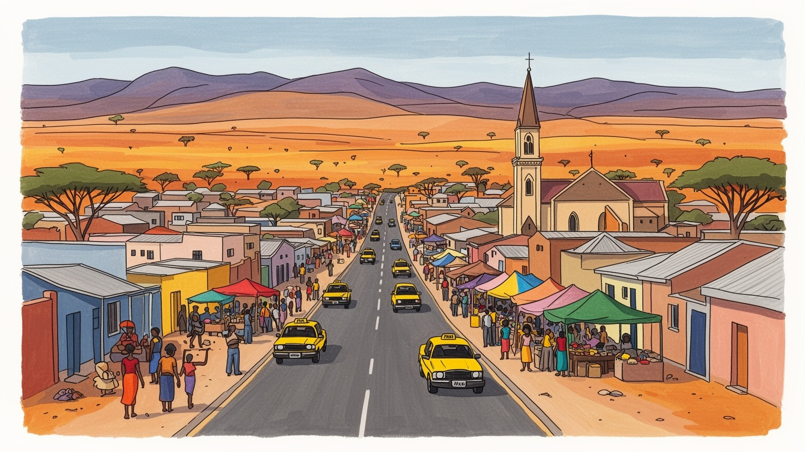
ウィントフックは南部アフリカの乾いた内陸首都です。南アフリカ支配からの独立、アンゴラ、ボツワナ、大西洋港との距離、鉱物資源の輸出が、政府機関と道路網を通じて街の重心を作っています。広い国土を結びます。
行政、金融、通信、小売、観光、建設、鉱業関連サービスが雇用を支えます。鉱山や港は市外にあっても、契約、保険、物流、政府許認可、人材は首都に集まり、家計と企業を結びます。若者の就職にも強く響きます。
オヴァンボ、ヘレロ、ダマラ、ナマ、ドイツ系、アフリカーンス語圏など多様な背景が交わります。教会、独立記念施設、植民地建築、音楽、市場の食が、複数の記憶を毎日に残します。祈りも深く街を支えています。
住民には水、住宅、通勤、物価、雇用が切実です。旅人にはクライスト教会、博物館、市場、カトゥトゥラ、ナミブ砂漠や国立公園へ向かう準備拠点として見える首都です。日常も旅の入口です。街歩きも記憶を開きます。
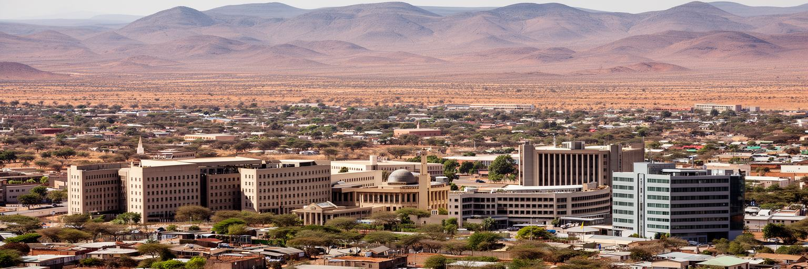
ウィントフックはナミビアの中央高原、標高の高い乾いた盆地に広がる首都です。大河や海港のそばではなく、国土のほぼ中央にある道路の結節点として、政府機関、銀行、商業施設、大学、病院、観光会社が集まります。周囲には丘陵と半乾燥の草地が続き、市街地の外へ出ると、ナミブ砂漠、カラハリ、エトーシャ方面へ向かう長距離の感覚がすぐに現れます。高原の気候は日中の強い日差しと朝夕の冷え込みを生み、雨季の短い雨は道路、排水、貯水に強く影響します。都市の面積は大きく、住宅地、工業地区、行政地区、低密度の郊外が距離を置いて並びます。広い道路は車移動に合いますが、徒歩や乗合交通に頼る住民には時間と費用の負担になります。首都の中心部は比較的整い、政府庁舎や教会、商業ビルが見えますが、都市の実態は周辺の住宅地やタウンシップまで含めて読む必要があります。乾いた高原に置かれたことは、景観の魅力であると同時に、水、土地、交通をめぐる制約です。ウィントフックでは、地理そのものが首都の使いやすさと不平等を形作っています。丘に囲まれた盆地では、風の通り道、日陰の少なさ、雨水が一時的に集まる低地も生活条件になります。新しい住宅地が外側へ伸びるほど、学校、診療所、バス路線、給水管を後から追わせる負担が増えます。首都の広がりは、乾いた土地をどう公共サービスへ変えるかという長い作業でもあります。
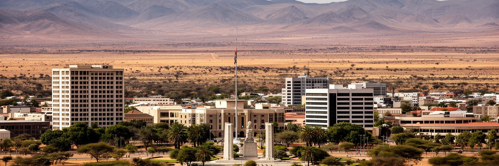
ウィントフックは一九九〇年に独立したナミビア国家の行政、外交、司法、報道が集まる場所です。省庁、議会、裁判所、外国公館、国営企業、大学、主要メディアは、広大で人口密度の低い国土を統治するための窓口になります。独立の記憶は、記念館や公的儀式だけでなく、土地、教育、雇用、言語、歴史教育をめぐる議論にも残ります。南アフリカ支配とアパルトヘイト政策の下で作られた制度を、独立後にどのように変えるかは、首都の政治を長く形作ってきました。政府は鉱物資源の管理、漁業、観光、自然保護、社会保障、農村支援、水資源、インフラ整備を調整しますが、限られた人口と広い国土は行政コストを高くします。住民にとって首都の政治は、身分証明、住宅、公共交通、学校、診療所、警察、土地利用許可として日常に触れます。行政が近い人と遠い人の差は、同じ市内でも大きく、手続きに必要な時間や交通費が不平等を広げます。ウィントフックを政治都市として読むことは、独立国家の象徴と、生活サービスを届ける実務の両方を見ることです。国旗の下で動く制度が、乾いた郊外の家まで届くかが問われます。首都の判断は北部の農村、沿岸の港、鉱山町、保護区にも伝わるため、会議室の政策は地図の端まで責任を持ちます。公務員の雇用も大きく、給与日や予算執行は街の商業にも影響します。
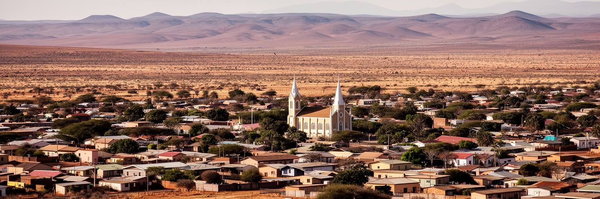
ウィントフックの街路には、ドイツ植民地期、南アフリカ統治、アパルトヘイト型の空間政策、独立後の再編が重なっています。中心部にはクライスト教会や旧要塞、植民地期の建築が残り、観光の目印にもなりますが、その背後には土地の収奪、強制移住、人種別居住、労働統制の歴史があります。カトゥトゥラのようなタウンシップは、単なる周辺住宅地ではなく、都市の分断と抵抗の記憶を抱える場所です。独立後、街は公共施設、道路、商業、住宅開発を広げてきましたが、中心部へのアクセス、雇用への距離、住宅の質、公共サービスの差は簡単には消えません。古い建築を美しい遺産として扱うだけでは、誰が街の中心に住めず、誰が長い通勤を強いられたのかが見えなくなります。一方で、植民地建築をすべて単純に拒むだけでも、都市の複雑な記憶は読めません。ウィントフックでは、建物、道路名、記念碑、博物館、タウンシップの生活が、歴史をめぐる対話の材料になります。都市の形は過去の制度を保存しやすく、変えるには時間がかかります。だからこそ、この首都を歩く時は、中心の整然とした景観と周辺の移動負担を同時に見ます。歴史は展示室の中だけでなく、毎日の通勤経路にも残っています。通りの名前を変えること、記念碑を説明し直すこと、学校で地域史を学ぶことは、都市空間を少しずつ読み替える作業です。観光客にも、写真を撮る前に背景を知る姿勢が求められます。
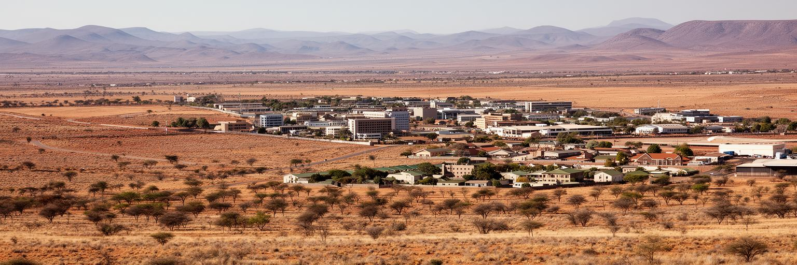
ナミビア経済ではダイヤモンド、ウラン、銅、金、亜鉛、漁業、観光が重要で、ウィントフックはそれらの現場を直接抱えない場合でも、契約、金融、保険、物流、政府許認可、人材、法律、会計、通信を担う業務中心になります。鉱山は沿岸部や内陸各地に分散し、港湾はウォルビスベイが大きな役割を持ちますが、企業本部、監督官庁、調達、国際投資の交渉は首都に集まりやすいです。資源価格の変動は、税収、公共投資、建設、小売、雇用へ波及し、中心部のオフィス街や郊外の家計にも影響します。鉱業は高い収益を生む一方、雇用の幅は限られ、地域格差や環境負荷、土地利用、先住民・地域社会との関係も焦点になります。観光、金融、小売、公共部門は鉱業依存を和らげる役割を持ちますが、若者の仕事を十分に吸収できるかは別の論点です。ウィントフックの経済を読む時、国内総生産の数字だけでは都市の実感は分かりません。高いオフィスビルの裏には、警備、清掃、運転、販売、家事労働、非公式商売が都市を支える現実があります。資源国家の首都では、地下や遠隔地の富が、どれだけ住宅、教育、水、交通へ戻るかが重要です。富の通り道を追うことで、街の格差も見えてきます。新しい投資案件が入る時も、地元企業が下請けや技能訓練に参加できるかで、首都に残る価値は変わります。資源の富を都市の学びと雇用へ変える力が問われます。
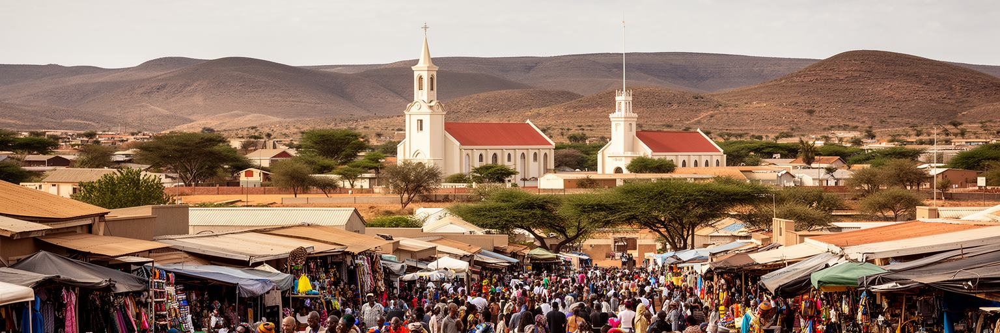
ウィントフックの文化は一つの民族や言語では説明できません。オヴァンボ、ヘレロ、ダマラ、ナマ、カプリビ地域の人々、ドイツ系、アフリカーンス語圏、移民、周辺国から来た働き手が、英語、アフリカーンス語、ドイツ語、オシワンボ語、ナマ・ダマラ語などを行き来します。教会は礼拝だけでなく、学校、葬儀、結婚、慈善、音楽、家族の相談の場として都市を支えます。独立記念施設や博物館は国家の物語を示しますが、住民の記憶はもっと多層的です。植民地支配、虐殺の記憶、アパルトヘイト、解放闘争、農村からの移住、都市での成功と挫折が、家族史の中で語られます。市場や食堂では、干し肉、トウモロコシ、肉料理、魚、パン、ビール、近隣国の味が混ざり、都市の多文化性は日常の食にも出ます。観光ではドイツ風の建物が強調されがちですが、それだけを見ていると、アフリカの首都としての現在が薄くなります。ウィントフックの文化は、記念碑の前だけでなく、タクシー内の会話、日曜礼拝、学校の言語選択、葬儀の集まり、音楽イベントにあります。複数の記憶が同じ街を使うからこそ、首都は過去をめぐる対話の場になります。文化は飾りではなく、共に暮らすための交渉です。若い世代は携帯電話、ラジオ、教会、学校、音楽を通じて、自分たちの言葉で都市文化を作り直しています。伝統と現代性は対立だけでなく、毎日の選択の中で混ざります。
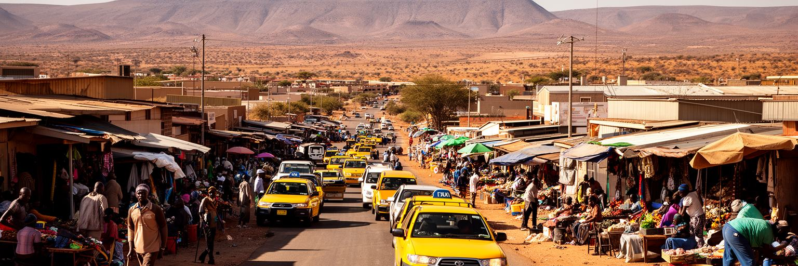
ウィントフックの日常は、官庁やオフィスだけでなく、市場、ミニバス、タクシー、露店、修理店、学校、診療所、教会、ショッピングセンターを行き来する生活で成り立ちます。中心部で働く人、カトゥトゥラや周辺住宅地から通う人、郊外の住宅に住む専門職、短期の建設現場で働く人では、同じ都市の感じ方が大きく違います。食料、家賃、水道、電気、交通費、学費は家計の主要な関心で、乾燥や景気、輸入品価格、燃料費の変化が生活に響きます。非公式商売は低所得世帯に現金収入をもたらしますが、場所の確保、警備、天候、規制、在庫資金の不足に左右されます。女性は販売、家事労働、育児、介護、教会活動を重ねながら家計を支えることが多く、その労働は統計に表れにくいです。若者は教育を受けても仕事が限られ、公共部門、民間事務、観光、警備、小売、起業、国外移動の間で進路を探します。生活の質は、中心部の整った景観よりも、安く安全に移動できるか、近くに水と医療があるか、夜に安心して帰れるかで測られます。ウィントフックの市場と街路を読むことは、資源国の首都にある日常の工夫と不安定さを見ることです。小さな支払いの積み重ねが、都市を毎日動かしています。週末の買い物、給料日前の節約、親族への送金、学校用品の準備は、統計に出にくい都市経済です。近所の信用や教会の助け合いも、家計の安全網として働きます。
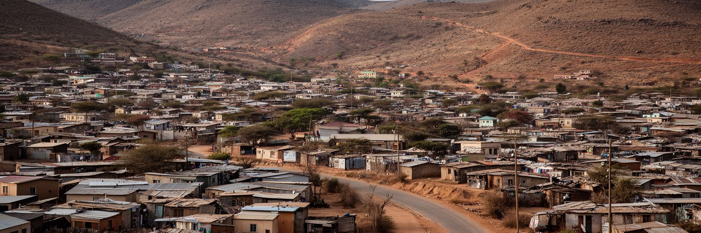
ウィントフックの住宅問題は、都市の歴史と現在の格差を最もはっきり示します。中心部や整備された郊外には行政、商業、比較的高所得の住宅が並ぶ一方、タウンシップや非公式居住地では、土地権利、水道、電気、道路、排水、学校、診療所へのアクセスが課題になります。人口増加と地方からの移住は住宅需要を押し上げ、低所得者が正式な住宅市場に入ることを難しくします。広い市域は余地を持つように見えますが、実際にはインフラを引く費用、通勤距離、土地所有、計画手続きが制約になります。アパルトヘイト期に作られた空間分断は、独立後も移動時間と公共サービスの差として残っています。家を持てるかどうかは、雇用、信用、家族の支援、行政手続き、土地価格に左右され、若い世帯ほど不安定です。非公式居住地の住民は、違法性だけで語られるべきではなく、都市に必要な労働を担いながら手頃な住まいを探している人々です。住宅を改善するには、撤去や郊外移転だけでは足りず、現地での水、衛生、道路、公共交通、学校、土地権利の整備が必要です。ウィントフックを公平な首都にする課題は、中心部を美しく保つことだけではありません。周辺の暮らしが安全で、仕事とサービスへ届く距離にあるかが、都市全体の信頼を決めます。住宅地の地図は、社会契約の地図でもあります。そこに都市の未来も見えます。
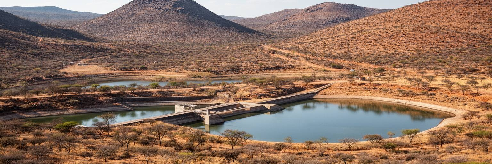
ウィントフックでは水が都市の生命線です。ナミビアはサハラ以南アフリカでも乾燥の強い国で、首都も限られた雨、ダム、地下水、再利用水、節水に支えられています。雨季に降る水は都市を潤しますが、降り方が不安定で、干ばつが続けば貯水と給水制限が生活と経済に影響します。乾いた高原では、庭、街路樹、建設、工業、観光施設、低所得住宅の衛生まで、すべてが水管理と結びつきます。気候変動が気温、雨の時期、干ばつの頻度を変えれば、都市の成長はさらに難しくなります。水を多く使える世帯と、共同水栓や高い料金に悩む世帯の差は、環境問題を社会問題に変えます。ウィントフックは再生水利用で知られる都市でもあり、限られた資源を循環させる技術と制度を育ててきました。しかし技術だけでは十分ではなく、漏水対策、料金設計、住民への説明、節水文化、低所得地区の衛生改善が必要です。乾燥都市の魅力は澄んだ空と広い景観にありますが、その美しさは水の脆さと背中合わせです。ウィントフックを気候都市として読むと、世界の多くの乾燥化する都市が直面する未来が見えてきます。水は単なるインフラではなく、成長、格差、健康、信頼を結ぶ政治的な資源です。蛇口の向こうに都市の将来があります。節水が日常の習慣として共有されるか、料金が弱い世帯を追い詰めないかも重要です。水の公平さは、乾燥都市の民主性を測る物差しになります。
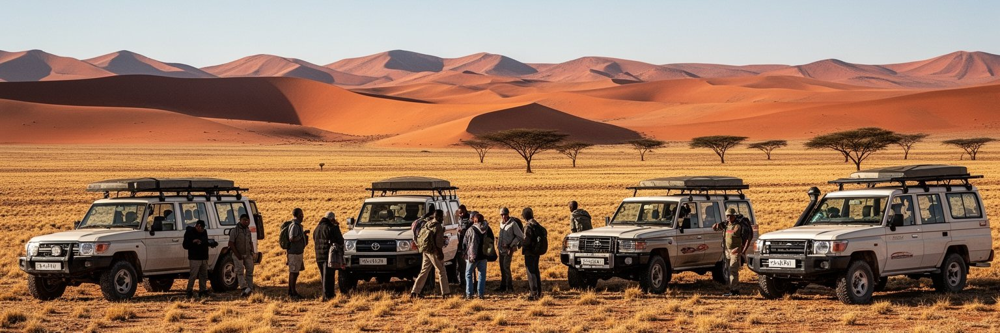
ウィントフックはナミビア旅行の準備地として重要です。旅行者はここで宿泊し、レンタカーを借り、食料と水を買い、通信手段を整え、ナミブ砂漠、ソススフレイ、スワコプムント、エトーシャ国立公園、ダマラランド、カプリビ方面へ向かいます。市内ではクライスト教会、独立記念施設、博物館、市場、クラフトセンター、カトゥトゥラツアーなどが旅の入口になります。ただし、首都を単なる出発点として通過すると、ナミビア社会の複雑さを見落とします。観光はホテル、ガイド、運転手、飲食、手工芸、燃料、小売に収入をもたらしますが、利益が誰に届くかは常に問われます。野生動物や砂漠景観を楽しむ旅行は、保護区、共同体保全、土地権利、先住民文化、環境負荷とも関わります。カトゥトゥラを訪れるツアーでは、貧困を見世物にしない配慮と、地元ガイドや店に収入が残る仕組みが必要です。ウィントフックの観光価値は、砂漠への便利さだけではありません。独立後の首都、植民地建築、タウンシップ、乾燥都市の水管理、多文化の食と祈りを通じて、旅人はナミビアを立体的に理解できます。遠い景勝地へ向かう前に首都の生活を読むことが、砂漠の美しさを消費で終わらせない旅につながります。準備の街にも、国の物語があります。旅行者が燃料や水を買う一つの行為も、乾燥地の資源感覚を学ぶ入口になります。ゆっくり街に滞在するほど、旅は深まります。
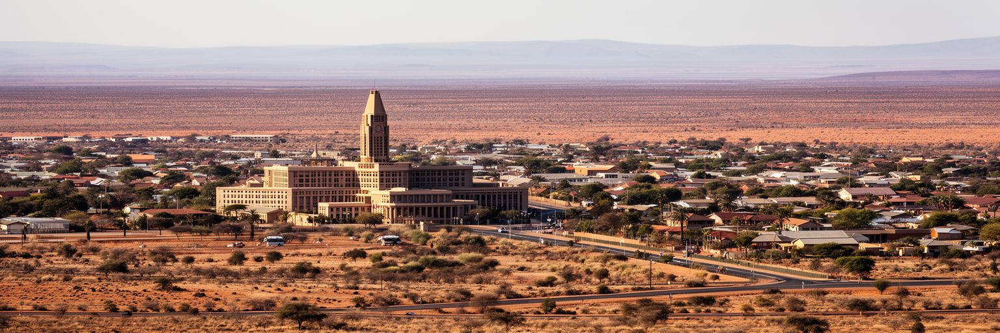
ウィントフックは世界の巨大都市のような人口や金融規模を持ちません。それでも重要なのは、乾燥する地球、資源国家の政治、植民地支配の記憶、独立後の国家建設、住宅格差、公共交通、水再利用、観光と保全が、一つの首都に濃く重なっているからです。国土が広く人口密度が低いナミビアでは、首都に集まる機能の重みが大きく、地方との距離も都市の責任になります。中心部の整った景観だけを見れば落ち着いた高原都市ですが、周辺住宅地、タウンシップ、長い通勤、水の制約まで見れば、都市の課題は明確です。鉱業や観光が生む富を、教育、住宅、医療、交通へどうつなげるかは、ウィントフックの政治的な問いです。植民地期の建物や記念碑は観光資源であると同時に、歴史をどう語り直すかを問う素材です。乾いた空、広い道路、丘の住宅地、市場のにぎわい、教会の鐘、官庁の窓口は、首都の別々の顔ではなく同じ都市の一部です。ウィントフックを読むことは、都市の重要性を規模だけで測らず、限られた資源と難しい歴史の中で、どのように国家と暮らしを組み立てるかを見ることです。小さく見える首都ほど、世界の大きな問題を近い距離で見せてくれます。南部アフリカの地域経済、砂漠観光、鉱物資源、解放の記憶、水の技術が同じ街で交差するため、この都市は静かな外見以上に国際的です。世界を読む尺度を広げる首都です。